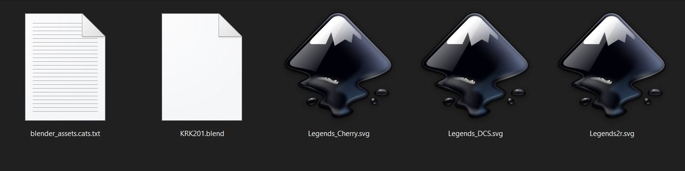
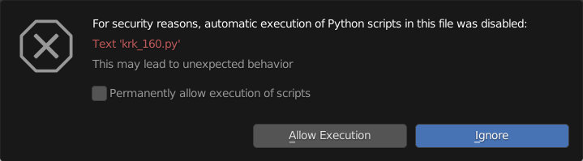

First Steps
What’s In The Box
In your download section, you’ll find a zip file containing a blend file and a txt file as well as SVG’s and other assets that are legend template related. Download and extract the zip file into a folder so the contents are together. The txt file acts as a sidecar for Blender’s asset management within the blend file.

Getting Started
Getting started with KRK2 is as simple as it was in the original KRK. Using Blender (3.3 or later), open the blend file and everything you need to get started is packed in the file. Upon opening the blend file, you will be asked whether to allow or ignore the script that is built into the file. The KRK2 panel requires the script to be running in order to function so choose to allow it here.

Getting Help
Join our community: Discord
Also read the Blender Manual